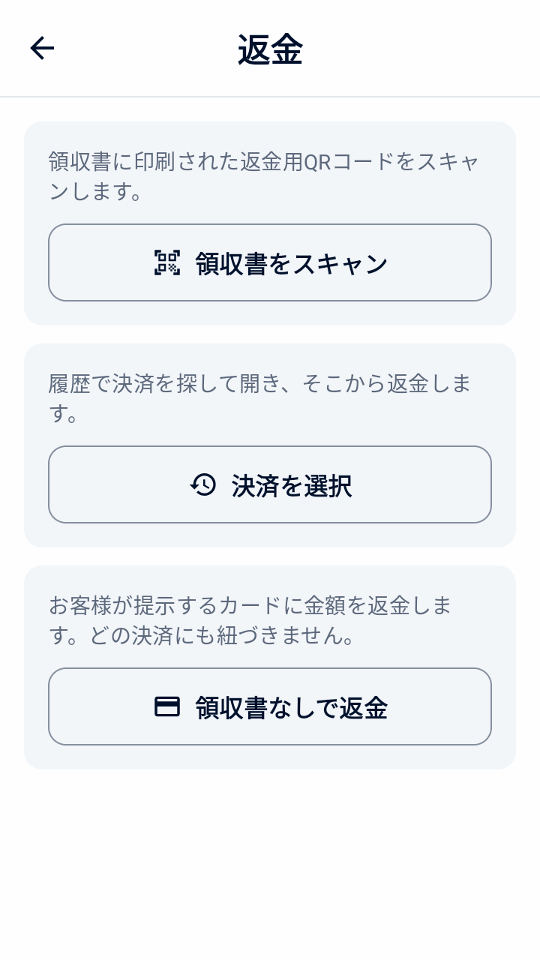
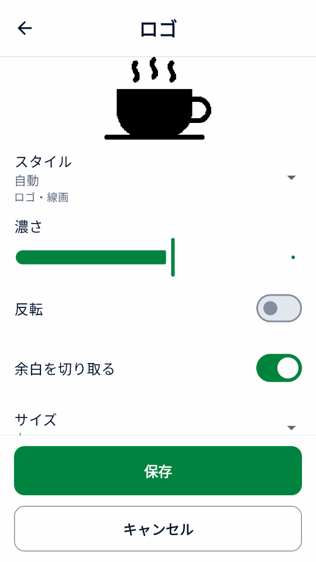
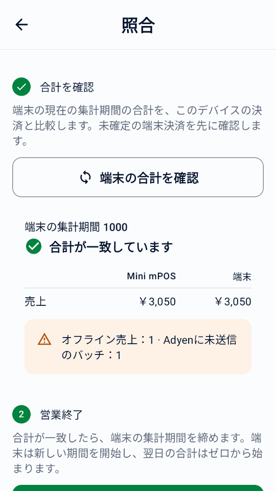

ガイド
Mini mPOS の使い方
店舗の準備、決済、レシートの提供、締め処理を行います。追加の決済機能は必要に応じて設定してください。
店舗の準備
商品、税、スタッフの権限を準備する
通貨と税を設定する
- 設定 › 決済で、マーチャントアカウントが対面決済で受け付ける通貨を選びます。
- 設定 › 税で、税率、税込価格か会計時に税を加えるか、新商品の初期税率を確認します。
設定後、「設定 › 決済」でAdyenに登録された加盟店アカウントの主な精算通貨が提案される場合があります。 これは提案であり、その通貨で決済できることを保証するものではありません。選択すると通常の価格確認が開きます。 現在の通貨を維持しても何も変更されません。
すべての商品に税率があり、非課税の商品には 0% の税率を使います。税を適用をオフにすると税はかかりませんが、税率は保持されます。
重要
通貨を変更しても価格の数値はそのままで、為替レートでは換算されません。変更後に商品価格を確認してください。
商品を追加する
- 設定 › 商品を開き、+ をタップします。
- 名前、価格、税率を入力します。必要ならカテゴリーとバーコード（入力またはスキャン）を追加します。
- 予約金の商品はプリオーソリ商品をオンにし、プリオーソリだけに表示されるようにします。
スタッフ用PINを設定する
設定 › セキュリティでPINを設定をタップすると、管理者PINで設定と商品を保護できます。 再びロックされるまでの時間も選びます。保護された操作にはマネージャーPINを設定をタップします。 管理者PINではこれらの操作を承認できません。あとで変更するには管理者PINを変更または 管理者PINを削除を使います。
マネージャー権限で、マネージャーPINが必要な操作を選びます。似た操作は1つのスイッチを共有し、 参照付き返金、領収書なしの返金、現金返金にはそれぞれ専用のスイッチがあります。このガイドのマネージャー承認は この設定に従います。
管理者PINがない場合、すべての操作を誰でも使えます。管理者PINを設定すると、マネージャーPINを設定するまで 保護された操作はブロックされます。管理者PINを削除するとマネージャーPINも削除されますが、権限の選択は 保持されます。PINを何度も間違えると、しばらく入力できなくなります。
接客と決済
カード決済を受け付ける
- ホームで新規販売をタップします。商品をタップするか、バーコードをスキャンをタップするか、任意の商品 を追加します。
- 会計ボタンをタップします。商品、税、合計を確認し、参照IDやメール欄を入力します。
- 決済ボタンをタップします。端末（Tap to Pay では Adyen Payments アプリ）が購入者に支払いを案内します。
- 結果を待ちます。結果が表示されるまで次の決済を始めないでください。
- 自動で届けていない場合は、領収書を印刷、領収書をメール送信、領収書を共有で領収書を渡します。
注記
端末と加盟店アカウントに応じて、お客様はカードを挿入またはタッチするか、スマートフォンや スマートウォッチをタッチします。Tap to PayではAdyen Paymentsアプリが案内します。
警告
結果不明は失敗を意味しません。再請求する前に元の決済を確認してください。
顧客参照IDとカードの保存は任意です。参照IDと保存カードを参照してください。 会計の分割や、現金・ギフトカード・食事券での支払いはオプションの決済操作を 参照してください。お客様自身のスマートフォンで支払ってもらうには決済リンクを 使います。決済が拒否された場合は拒否された決済を参照してください。
決済を返金・取消する
- 返金
- 請求済みの決済が対象です。全額または一部を返します。
- 取消
- キャプチャ前の確保中の決済が対象です。予約金はプリオーソリをキャンセル、チップ入力待ち の販売は決済をキャンセルをタップします。確保が解除されます。
返金の手順：
- ホームで返金をタップし、領収書をスキャンで領収書の返金用 QR コードをスキャンするか、決済を選択で取引履歴から元の販売を開きます。
- 全額、指定金額、商品単位のいずれかを選びます。商品単位の返金には、このデバイスに元の販売が必要です。
- 返金を確定し、求められたらマネージャーPINを入力します。


これらの返金は元の決済に紐づきます。支払済みの決済リンクは Customer Area で返金します。
分割した販売は元の各支払いに返金されます。Mini mPOSが各カードへの返金額と現金での返金額を 提案します。支払いをタップすると調整できます。カードを1枚ずつ先に返金し、最後に現金を返金します。現金の返金には マネージャーPINが必要です。カードの返金が受け付けられない場合、それ以降は返金されません。販売を開いて残りを 確認してください。
サーチャージが報告された販売では、購入額、チップ、サーチャージの順に 返金されます。全額返金には残りのサーチャージも含まれます。
領収書なしの返金
領収書なしで返金は、領収書のない返品など、返金する決済がない場合にのみ使います。購入者が 提示したカードに金額を返金し、どの決済にも紐付かないため、Mini mPOSは支払われた内容を確認できません。 誤った返金や重複した返金の責任は加盟店にあります。
Adyenにストアの非参照返金を有効にしてもらい、Customer AreaでAdyenの返金上限を設定します。次に「設定」›「決済」で 領収書なしの返金を許可をオンにし、独自の返金上限とマネージャーPINを設定します。 一部の国やQRコード型ウォレットではAdyenがこの返金を認めていません。Mini mPOSはAdyenが端末に対して確認した ストアをチェックします。
領収書なしで返金をタップし、金額を入力して理由を選び、確定してマネージャーPINで承認します。 その後、購入者がカードを提示します。返金承認済みはアクワイアラーが即時に承認したことを、 返金要求済みはAdyenがリクエストを受け付けたことを示します。取引履歴、領収書、日次レポートでは これらの返金を別に表示します。手作業で照合してください。
Adyenサポートが返金の保留期間を設定した場合は、返金保留期間を設定済みをオンにします。保留期間中に 返金を開いて返金を取り消すをタップし、停止されたかどうかをCustomer Areaで確認してください。
Adyen: Unreferenced refunds · Adyen: Cancel an unreferenced refund
重要
返金要求済みは Adyen がリクエストを受け取ったという意味で、購入者への入金完了ではありません。最終結果は Customer Area で確認してください。返金の結果が不明な場合は、再試行の前に確認してください。
領収書を印刷、メール送信、共有する
決済結果や取引履歴の項目で領収書を印刷または領収書をメール送信をタップします。タブレットやスマートフォンでは領収書を共有 で、Android の共有メニューから画像を送れます。印刷にはプリンター付きの端末が必要です。
領収書をカスタマイズしてテストする
- 設定 › 領収書で店舗情報、ヘッダー、フッターを入力します。またはAdyenから店舗情報をインポートし、Adyen の情報を確認します。 不足している情報を補完で既存の文言を保持するか、既存の情報を置換 で取得した店舗名・住所・電話番号を使います。取得した項目が空欄の場合は元の値を保持し、登録番号・タイトル・フッターは変更しません。
- 自動で印刷、加盟店控えを印刷する条件、返金用QRコードを表示するかを選びます。
- テスト領収書を印刷をタップして印字を確認します。画面のプレビューはプリンターの正確なレイアウトを示しません。
そのほかの設定：
- 税額を表示
- 合計に含まれる税額、または加算する税額を表示します。課税額は変わりません。
- 税率別の内訳を表示
- 税率ごとの税額を表示します。税込価格で含まれる税額を表示するには必要です。
- 税率別の対象金額を表示
- 0% を含め、税率ごとに商品の合計を表示します。
- 参照IDを表示
- 初期設定でオンです。加盟店参照IDと入力済みの購入者参照IDを印刷し、領収書を決済と照合できるようにします。
- 印を付ける税率（%）
- その税率の商品に商品の印と説明を付けます。空欄なら印を付けません。
- 1行の文字幅
- 細い領収書ロール向けに初期値は 32 です。テスト印刷でプリンターに合う幅を選んでください。
設定 › 領収書 › ロゴでPNG、JPEG、WebPの画像を選びます。端末にファイル選択機能がない場合は、 セットアップヘルパーからロゴだけ、またはほかの設定と一緒に送れます。白黒プレビューを確認し、 スタイルで自動・ロゴ・写真を選び、濃さ、反転、余白の削除で調整します。サイズで 大または小を選んで保存します。ロゴに店舗名が含まれている場合は店舗名を印刷をオフにします。
ロゴは印刷、メール送信、共有される領収書に表示され、再印刷にも使われます。調整するには元の画像を選び直します。 消去するには「ロゴを削除」を使います。


言語を設定する
アプリは英語、簡体字中国語、繁体字中国語、日本語、ブラジルポルトガル語、スペイン語、フランス語に対応しています。 設定 › 言語を変更すると、この端末のアプリの文言と領収書のラベルがすぐに切り替わります。 保存済みの店舗の文言や商品名は変わりません。デバイスに従うではAndroidのアプリ言語を使います。 Adyenのカード情報の行は端末の領収書言語に従います。
領収書のメール送信を設定する
SMTP サーバーへの送信を許可します。通常は TCP 587（STARTTLS）または 465（SSL/TLS）です。
- 設定 › 領収書のメール送信を開きます。プロバイダーを選ぶか、SMTP サーバー、ポート、差出人、ログイン情報を入力します。STARTTLS または SSL/TLS を使います。
- テストメールを送ります。
- 同じ画面で、購入者のメールを尋ねるタイミングと自動送信の有無を選びます。
SMTP の許可と正しいパスワードについては各社の説明に従ってください。
領収書を印刷・送信できない場合はプリンターとメールの問題を参照してください。
締め処理
決済を探し、一日の精算をする
取引履歴は決済と返金を日別に表示し、日計も表示します。
1ページに7日分、最大100件を表示します。前へと次へでページを移動します。 検索は保持されているすべての取引が対象です。
- 販売、チップ入力待ち、プリオーソリ、返金、要確認で絞り込み、カードブランドやウォレットは決済方法 で選びます。
- 参照ID、承認コード、購入者参照IDやメール、カード下4桁、ブランド、ウォレット、正確な金額で検索できます。すべての語が一致する必要があり、
visa 34は 34 の Visa 決済を探します。
画面の合計は検索とフィルターに従います。予約金や領収書のチップなど確保中の決済は、キャプチャが受理された日に売上として計上されます。
一日の精算をする
- 取引履歴を開いて要確認で絞り込み、各項目を解決します。結果が不明な場合 を参照してください。
- チップ入力待ちとプリオーソリのフィルターを確認します。チップを入力し、確保の期限前に予約金をキャプチャまたはキャンセルします。
- 日付の横の印刷アイコンをタップし、ローカル日次集計を印刷します。
- Customer Area の Adyen レポートと照合します。 Adyen の精算照合ガイドを参照してください。
集計はフィルターを無視して一日全体を対象にし、売上、含まれるチップ、受理済みの返金、差引額、新規確保額、未解決の操作を通貨別に示します。TEST とシミュレーターの活動は明記されます。支払済みの決済リンクと日付のわからないキャプチャは、日付不明の活動として別に表示されます。
重要
ローカル日次集計の対象は、このデバイスに保持された決済だけです。Adyen の最終的な精算（キャプチャ）ではなく、他のデバイスも含みません。Customer Area の情報が正となります。
警告
LIVE、TEST、シミュレーターを切り替えると、このデバイスのすべての決済履歴とレポートデータが完全に削除されます。未完了の決済がある場合は、もう一度警告が表示されます。Adyen 側では何も取り消されませんが、ローカルの復旧と安全な再試行データは失われます。商品と設定は残ります。
端末の合計と照合し、期間を締める
- ホームで照合をタップし、端末の合計を確認をタップします。Mini mPOSは処理中や結果不明の端末決済を先に確認し、Mini mPOSと端末の売上と返金を並べて表示します。
- 合計が一致しません と表示された場合は、取引履歴で確認が必要な決済を解決してから再度確認します。端末の集計期間は暦日とは限りません。同じ端末を別のデバイスから使った場合やローカル履歴が不足する場合は差異が生じます。決済リンク、トークン請求、サンプル履歴は端末決済ではありません。
- 営業終了時に端末の集計期間を締めるをタップして確認し、必要ならマネージャーの承認を行います。端末は現在の期間を終了し、新しい期間を開始します。元に戻すことはできません。
- 必要に応じて本日のレポートを印刷でローカル日次集計を印刷します。
Tap to Payでは利用できません。合計が一致しても、期間を締めても、精算、返金の完了、オフライン取引の アップロードは確認されません。最終的な結果はCustomer Areaで確認してください。


端末とデータの管理
追加のデバイスを設定し、データを管理する
- 設定済みのデバイスで設定 › データと転送 › 別のデバイスに共有を開きます。カタログ、設定、パスワードとキーから選び、QRコードを表示 をタップします。
- 新しいデバイスで別のデバイスから設定を選び、すべてのコードを任意の順で読み取ります。カタログを統合するか置き換えるかを選びます。
- 最初のデバイスに表示された 12 文字の転送コードを入力します。商品や設定だけをコピーする場合も必要です。QR コードとは別に保管してください。インポートをタップします。
- 価格と税を確認し、設定 › 端末で接続をテストして、テスト領収書を印刷します。
新しいデバイスは、自身の決済先、端末、環境、Tap to Pay の登録を保持します。共有キーを別の端末で使えるのは、Adyen がその端末に同じキーを割り当てている場合だけです。
重要
これは一度きりのコピーで、同期や決済履歴のバックアップではありません。各デバイスがそれぞれの決済を保持します。Android でアプリのデータを消去すると、デバイスのすべての商品、設定、履歴が削除されます。
設定 › データと転送で取引の保存期間を設定するか、完了した履歴を消去 をタップします。未解決の決済は常に残ります。
タブレットやスマートフォンでは、起動時に新しいバージョンを確認します。ホームに更新が表示されたら、タップしてブラウザーで APK を開き、ダウンロードしたファイルをインストールします。Adyen 端末はこの通知ではなく Customer Area から更新します。 最新リリースを入手し、 インストール手順に従うこともできます。同じ署名元を使い、既存のアプリに上書きしてください。アンインストールやデータの消去はしないでください。
取り込みの問題は PIN と転送の問題を参照してください。